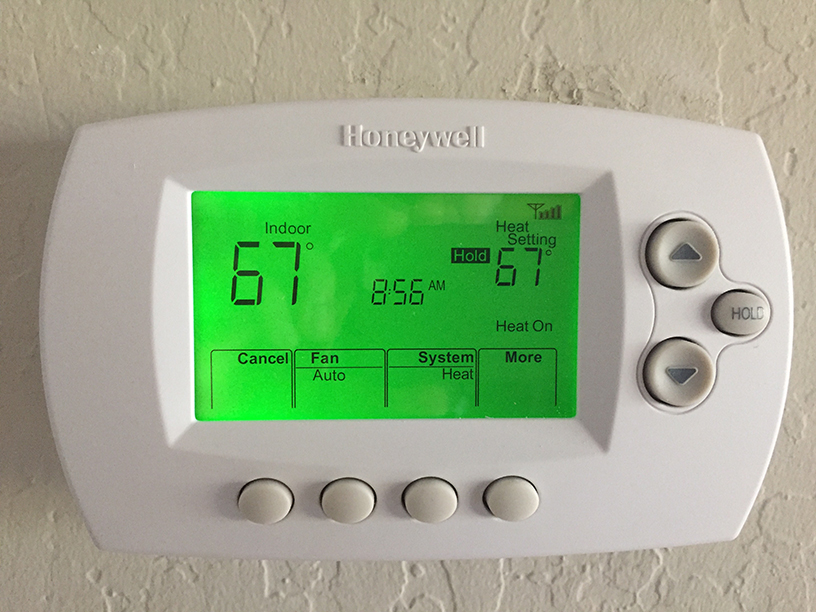
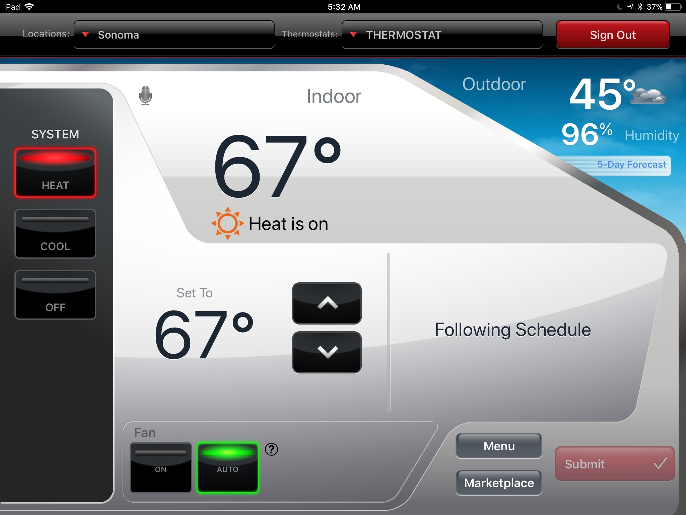
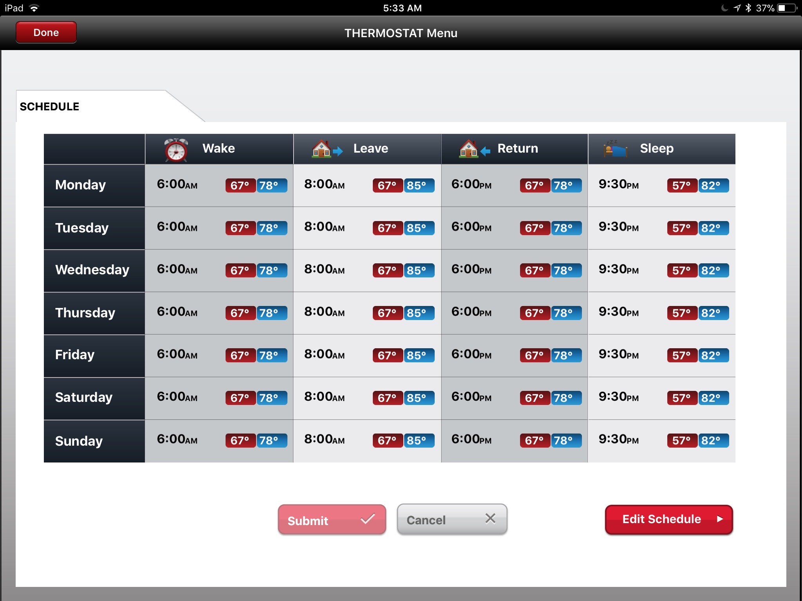

I wanted a thermostat that was controllable over the Internet but was not second guessing my wishes
nor watching my actions, so I bought a Honeywell 7 Day Programmable Wi-Fi Enabled Thermostat, shown below:

The thermostat requires 24 volt power, and my heating system was missing that wire, so I had to separately
buy a wall wart to provide the power. Otherwise, the installation was easy.
The images below, however, show that while Honeywell has good skills at designing slick user interfaces,
they apparently can't design a thermostat that works. In the image below, you can see that the current time
is 5:32AM, the current temperature is 67, and the setpoint is 67:

However, the schedule below shows that the setpoint should be 57, not 67:

Sure enough, every night, at some time (I'm not sure what time; I'm asleep), the thermostat
starts dancing to its own drummer and invents its own schedule. When the house gets too warm
for sleeping, I wake up, as happened here at 5:35AM.
After several exchanges with Honeywell support, where they suggest the usual reboot, de-register and re-register, etc., they confessed that this was a "feature," where the thermostat does in fact second guess me and tries to learn when to actually change the setpoint so that the setpoint temperature is reached by the time I've specified that the setpoint should change. It apparently does this "conservatively" (which in this case means "squandering energy"), reaching the desired setpoint well in advance of the specified time. This "feature," it turns out, can be disabled as follows:
The bottom line seems to be that you cannot escape it. Your devices will increasingly second guess you, which I suppose means that we will steadily lose control.